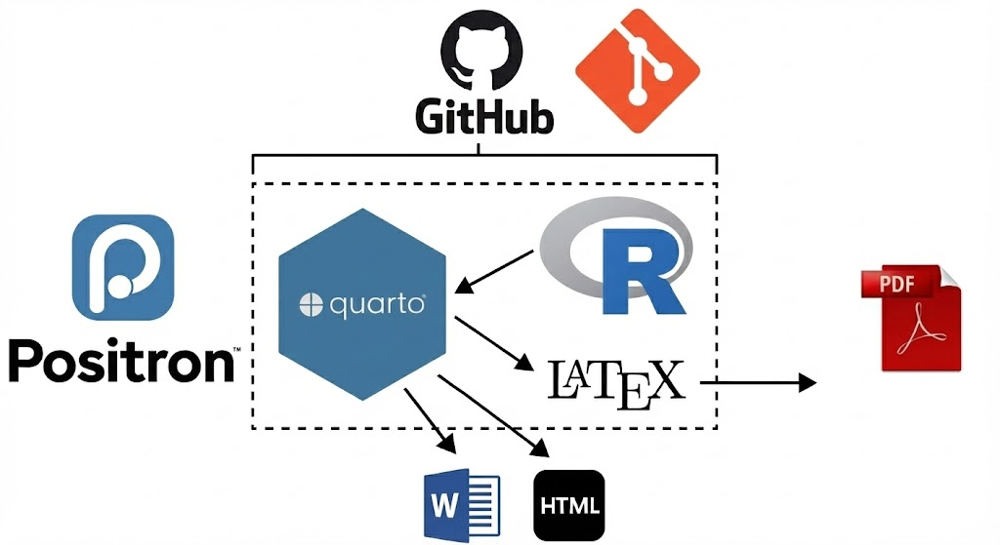
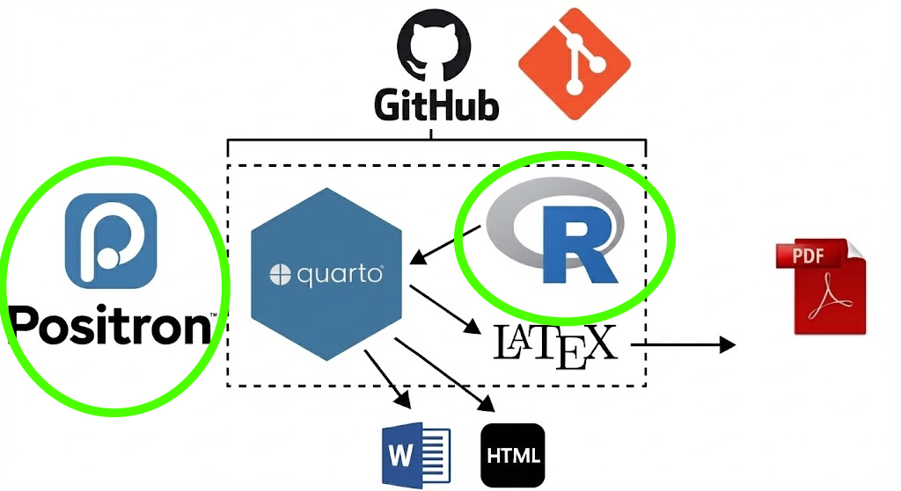
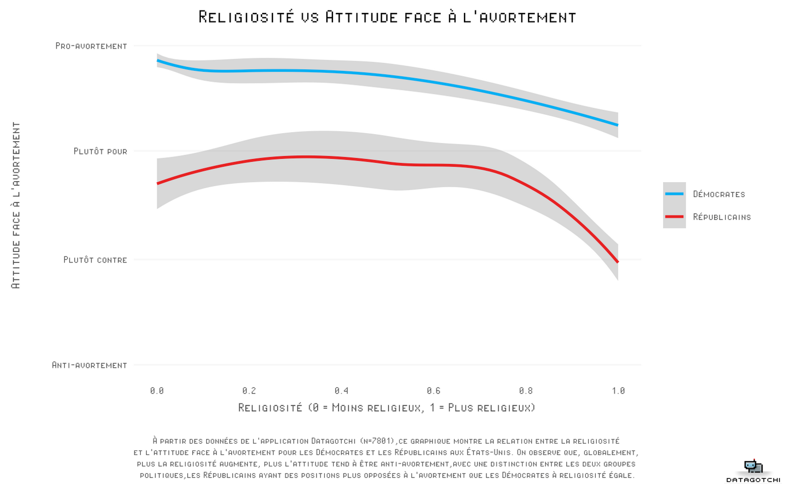
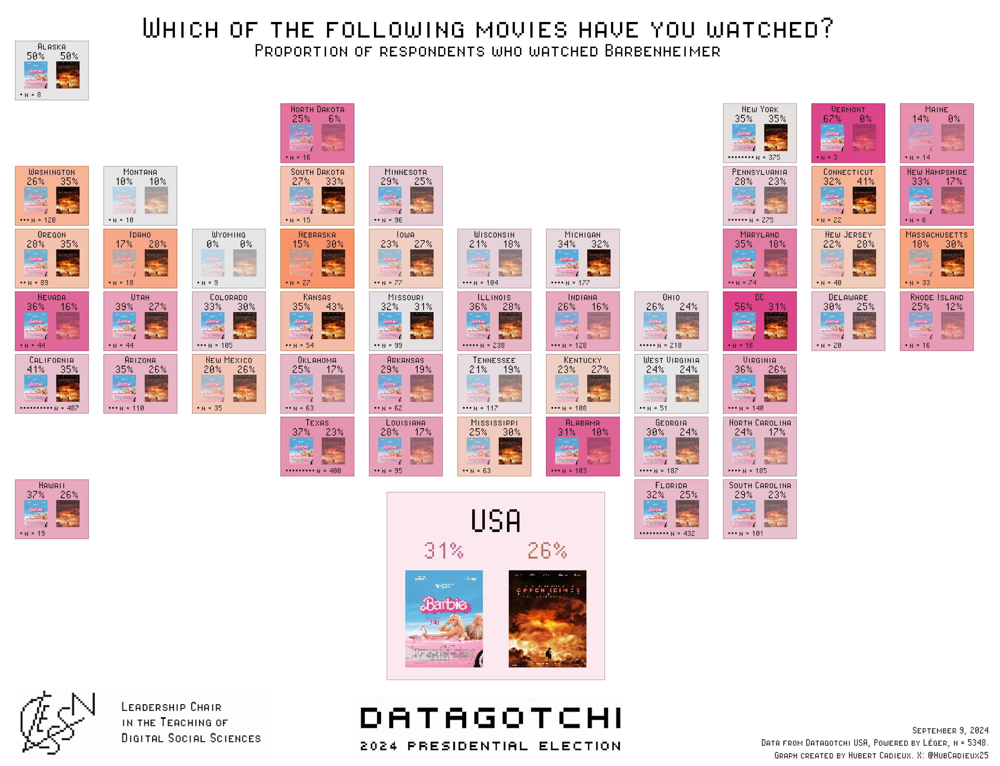
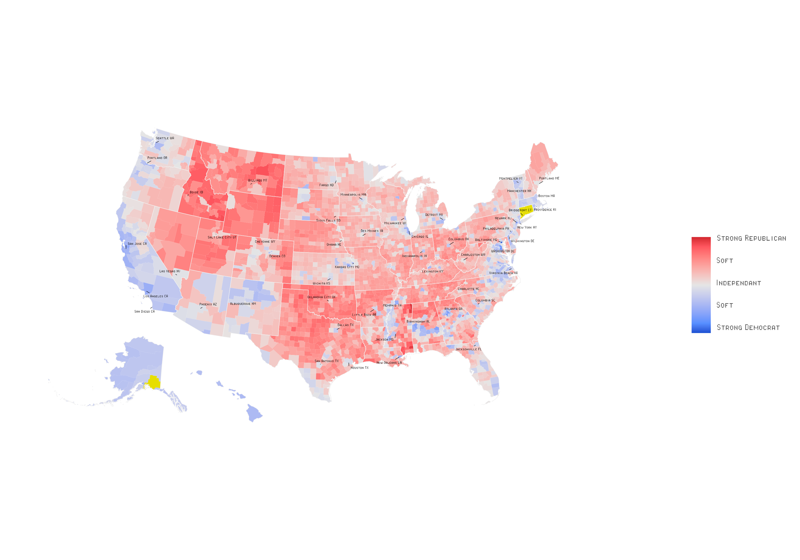
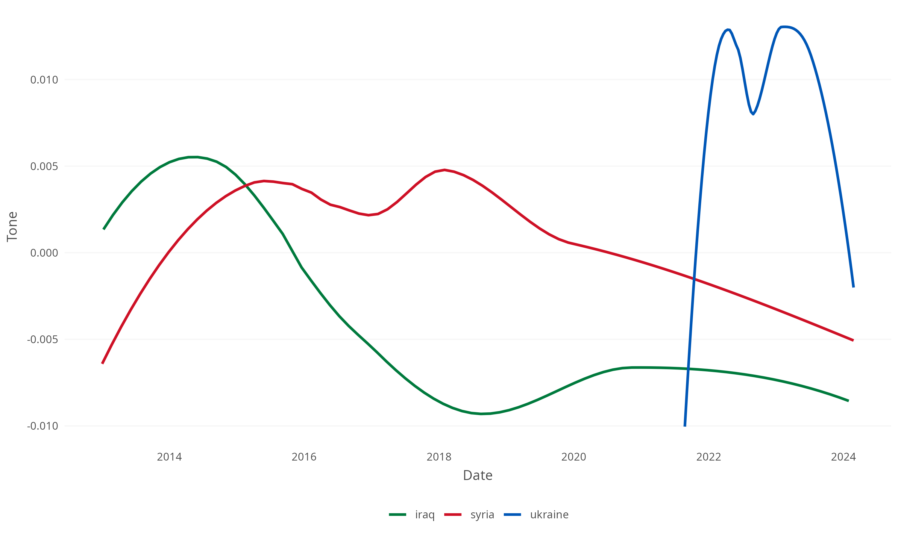
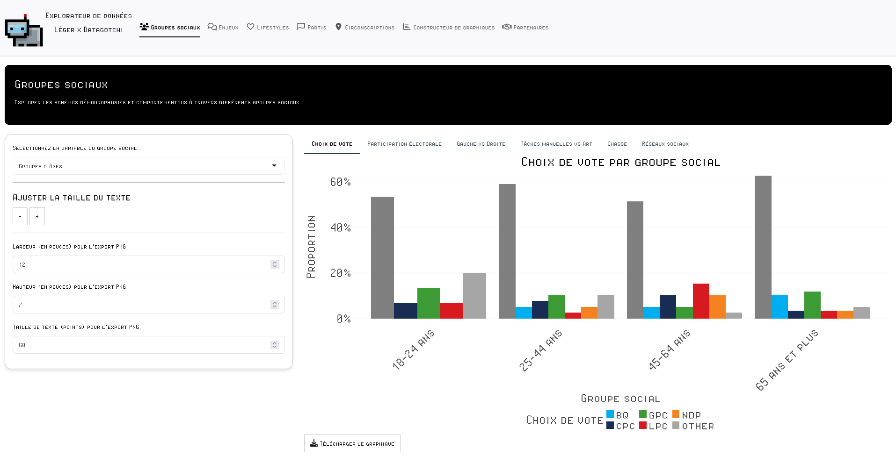
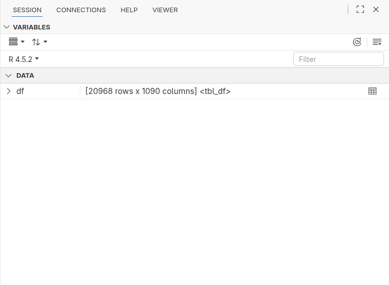

flowchart LR
A[Ingredients<br/>Arguments] -->|Input| B(The Machine<br/>Function)
B -->|Processing| C[Result<br/>Output]
style A fill:#e74c3c,stroke:#333,stroke-width:2px,color:white
style B fill:#3498db,stroke:#333,stroke-width:2px,color:white
style C fill:#2ecc71,stroke:#333,stroke-width:2px,color:white
Introduction to R
Introduction to Big Data in Social Sciences
Laurence-Olivier M. Foisy
Université de Montréal
Course Structure

Tools to Get There



Course Objectives
- Introduce R for data analysis.
- Dataframes
- Functions
- Packages
- Plots
- Statistics
The goal is for you to leave here with a basic understanding of R and to be able to find resources to continue learning.
Data Analysis Tools


Why R?

Open Source
- Free
- Collaborative
- Active community
- Tailored to user needs
Why R?

Packages
- Offers an almost infinite extension of core features
- Can meet very specific needs
- More than 22,000 packages on CRAN (Comprehensive R Archive Network)
- Many more on GitHub
Why R?

Tidyverse
A collection of packages for data manipulation
dplyr: data manipulationggplot2: plotstidyr: data cleaningreadr: data importstringr: string manipulation
Why R?

CLESSN Packages
- sondr
- Allows automation of several aspects of data analysis. Enables us to run factor analyses in seconds.
- clellm
- Allows using open-source LLMs directly in R and using functions only available in Python, in R.
- clessnize
- Allows standardizing the style of our plots quickly without repeating the same steps every time.
Why R?

Reproducibility
- Make analyses reproducible
- Allows sharing code
- Facilitates transparency and collaboration
- Helps trace errors
Why R?

Widely Used in Social Sciences
- Lots of resources
- Many tutorials oriented towards social sciences
- Swirl
- Datacamp
- Codecademy
Important to use the same tools as researchers in your field
Why R?

Examples of Usage by Organizations




Text Analysis
- Tone analysis

But Also…
- Text categorization
- Does the text talk about politics, health, sports?
- Image analysis
- Audio transcription
R: Beyond Data Analysis
- R is not limited to statistical analysis, it can also be used to develop interactive web applications

After R
Learning R allows you to understand other programming languages
- Python
- Julia
- SQL
- JavaScript
- HTML/CSS
- Bash
Installing R and Positron
- R is the programming language
- Positron is the interface
- Positron offers many tools to make R easier to use
- Positron is one IDE among many others
Downloads:
Positron Overview
Before Starting: Planning
The biggest mistake is starting to code without knowing what you want to do
- Clarify your objectives: What do you want to do?
- Clean data?
- Make a plot?
The possibilities are endless, so it is important to know where you want to go
Before Starting: Breaking Down the Problem
- Break down the problem into small steps
- One R script for a single task
- Name your scripts well to know what they do
- Examples:
1_collection.R2_cleaning.R3_analysis.R4_plot.R
- Each script should be clear and easy to understand
- Comment your code using
#
Before Starting: The Directory Tree
- At all times you must know where you are on your computer
- Your R session always “points” to a folder on your computer
- This is the working directory
- The function
getwd()allows you to find out the current working directory

~/Colleague/6th/Interest Center 3/Materials/
Before Starting: The Directory Tree

Importing Data
- Data is often in Excel, CSV, or other file formats
- We use functions like
read.csv()to read files
- We use functions like
- In this line of code, there are several important elements:
- The name of the object:
dfin this case, which is a dataframe - The assignment operator:
<- - The function used to read the file:
read.csv() - The path to the file:
"path/to/data.csv"
- The name of the object:
Importing Data
Other functions for importing data depending on the format:
df <- readxl::read_excel("path/to/data.xlsx")df <- readRDS("path/to/data.rds")df <- haven::read_sav("path/to/data.sav")

File Paths
Important to understand how to specify the path to a file
Here are the two ways to specify a path:
- Absolute:
/Users/username/Documents/project/data/data.csv- Only useful on your computer; another user won’t be able to use the same path
- Relative:
data/data.csv- Useful for sharing code with other users
Difference between Mac and Windows
- Mac:
/ - Windows:
\(make sure to change\to/)
Anatomy of a Line of Code
Let’s take a simple example:
Let’s break down this line:
result: name of the object where we store the result<-: assignment operatormean(): function that calculates the meandf$age: variable ‘age’ of the dataframe ‘df’na.rm = TRUE: argument of the function (ignore NAs)
Understanding Functions
A function is like a machine: it takes ingredients (arguments), follows an internal recipe (code), and returns a dish (result/output).
Concrete Example
- Ingredients (
x,na.rm): The data (the vector) and options (remove missing values). - Machine (
mean): Calculates the sum divided by the number of elements. - Result (
result): The value20is stored in the object.
Data Structures: 1D vs 2D
In R, everything starts with the vector. A dataframe is simply a collection of vectors (columns) of the same length placed side by side.
Data Types in R
Basic Types:
numeric: numbers (with or without decimals)
character: text (strings)
logical: TRUE or FALSE
Data Types in R
Special Types:
factor: categories
Date: dates
NA: missing values
Parentheses, Quotes, and Commas
Parentheses ():
- Delimit the arguments of a function
- Must always be closed
Commas:
- Separate function arguments
Assignment: = vs <-
The <- Operator:
- Recommended for variable assignment
- Clearer and more explicit
- Standard in the R community
The = Operator:
- Used primarily for function arguments
- Can create confusion
Common Error Messages
Syntax Error
Object Not Found
Error Messages (Continued)
How to React to Errors:
- Don’t panic! Errors are normal
- Read the error message carefully
- Check the line indicated in the message
- Things to check:
- Parentheses closed?
- Quotes closed?
- Commas in the right places?
- Correct object names?
- Package loaded (
library())?
Let’s Code!
We Will Use the swiss Dataframe
Quick Analysis of a Variable
$allows accessing a variable in a dataframe.- We access the
Fertilityvariable in thedfdataframe withdf$Fertility
Filter and Select Variables
# Select columns
# (for example, Fertility, Education, and Agriculture)
df_selected <- df %>%
select(Fertility, Education, Agriculture)
# Filter rows to include only cantons
# with fertility above average
mean_fertility <- mean(df_selected$Fertility, na.rm = TRUE)
df_filtered <- df_selected %>%
filter(Fertility > mean_fertility)The Pipe |> or %>%
The pipe means “and then”. It allows passing the result of one step to the next without nesting functions.
Without Pipe (Hard to Read)
Read from the inside out:
Note
The native pipe |> (R 4.1+) is the new standard, but you will often see %>% (the tidyverse pipe). They do the same thing 99% of the time.
Modifying Variables
# Create a new binary variable "high_agriculture"
# indicating whether the percentage of agriculture is above 50
df_mutated <- df_filtered %>%
mutate(high_agriculture = ifelse(Agriculture > 50, 1, 0))
# Group by "high_agriculture" and calculate the average education
df_summarized <- df_mutated %>%
group_by(high_agriculture) %>%
summarize(average_education = mean(Education, na.rm = TRUE))
# Print final result
print(df_summarized)Graphical Data Representation
General Principles of Visualization
- Show the data
- Avoid unnecessary distractions
- Choose appropriate visualizations
- What information will be useful?
- Avoid “spaghetti” charts
- Avoid overly complex lines that overlap and intertwine
- Start in black and white
- Use colors effectively
Visualization with ggplot2
Initialize a Plot
dfis the dataframeaes()is the function to specify the variables to usexandyare the variables for the x and y axescoloris the variable for the color
Visualization with ggplot2
Add a geom_()
- There are several
geom_()for different types of plotsgeom_point()is for a scatter plotgeom_line()is for a line chartgeom_bar()is for a bar chartgeom_histogram()is for a histogram
Visualization with ggplot2
Add a Color Scale
scale_color_gradient()specifies the colors for theEducationvariablelowandhighare the colors for the lowest and highest valuesnameis the legend title- You can use hex codes for colors
Visualization with ggplot2
Add Titles and Labels
ggplot(df, aes(x = Agriculture, y = Fertility, color = Education)) +
geom_point(alpha = 0.8) + # alpha is transparency
scale_color_gradient(low = "blue", high = "red", name = "Education") +
labs(
title = "Relationship between Agriculture and Fertility in Switzerland",
x = "Percentage of Agriculture",
y = "Fertility"
) Visualization with ggplot2
Add a Theme
ggplot(df, aes(x = Agriculture, y = Fertility, color = Education)) +
geom_point(alpha = 0.8) + # alpha is transparency
scale_color_gradient(low = "blue", high = "red", name = "Education") +
labs(
title = "Relationship between Agriculture and Fertility in Switzerland",
x = "Percentage of Agriculture",
y = "Fertility"
) +
theme_minimal()theme_minimal()is a minimalist theme- There are several predefined themes in ggplot2
- You can also create your own theme
Visualization with ggplot2
Save the Plot
ggplot(df, aes(x = Agriculture, y = Fertility, color = Education)) +
geom_point(alpha = 0.8) + # alpha is transparency
scale_color_gradient(low = "blue", high = "red", name = "Education") +
labs(
title = "Relationship between Agriculture and Fertility in Switzerland",
x = "Percentage of Agriculture",
y = "Fertility"
) +
theme_minimal()
ggsave("plot_name.png", width = 10, height = 6)- You can specify the plot format (png, pdf, etc.) and the path to save the plot
Visualization with ggplot2
A Histogram of the Fertility Variable
Statistical Analysis
# Calculate the correlation between Fertility and Agriculture
correlation <- cor(df$Fertility, df$Agriculture)
print(paste("Correlation between Fertility and Agriculture:", round(correlation, 2)))
# Run a linear regression with Fertility as the dependent variable
modele <- lm(Fertility ~ Agriculture, data = df)
# Display the summary of the regression model
summary(modele)Best Practices
style.tidyverse.org
Best Practices
General Rules:
- Name your files descriptively
- Use lowercase only and no special characters (like accents)
- If your files contain multiple words, separate them with underscores
_ - Example:
data_cleaning.R - Use numbers to order your scripts
- Avoid writing overly long lines of code
- Use the
snake_caseconvention rather thancamelCase - Name your dataframes in a standard way, e.g.,
df_ordata_
Organizing Your Working Environment
Learning More
Resources
What to do when it doesn’t work?
- ChatGPT
- Be clear and precise in your prompts
- Explain the structure of your data
- Copy-paste the error message
- Copy-paste package documentation
- Try ChatGPT again
- It’s rare for ChatGPT not to find the answer
- R documentation (e.g.,
?mean()in your console) - Google
- Stackoverflow
- Stackexchange